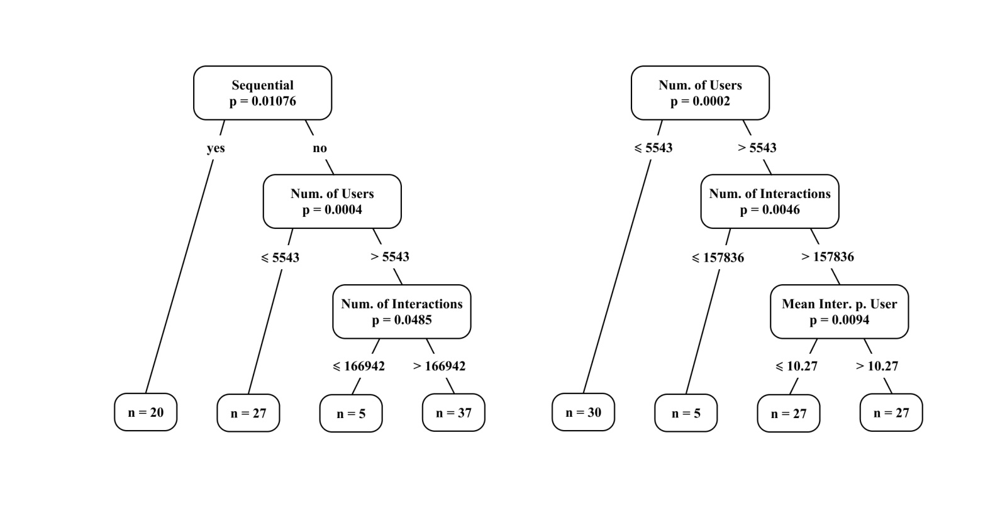
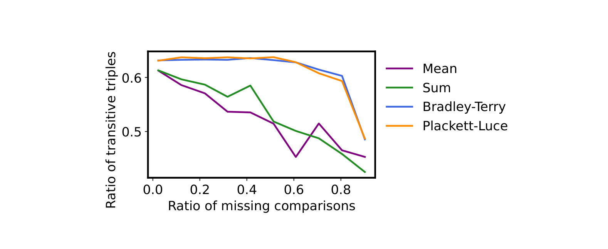
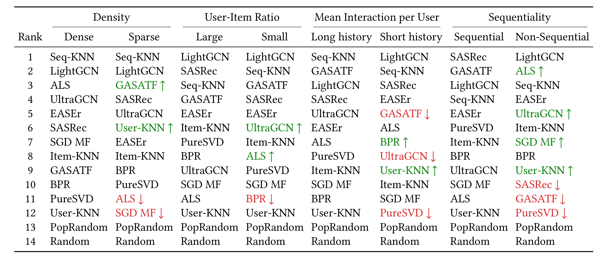
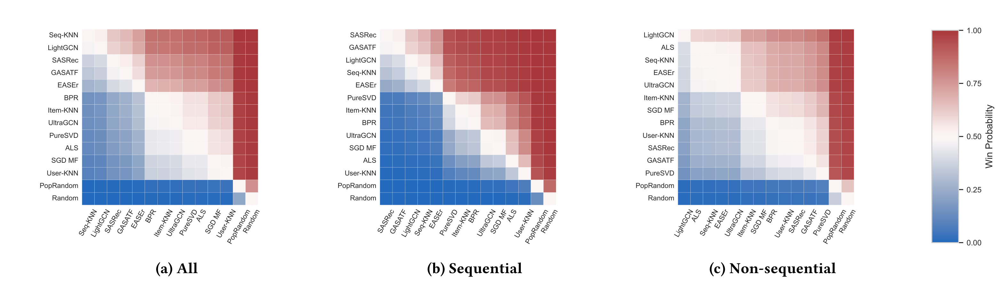
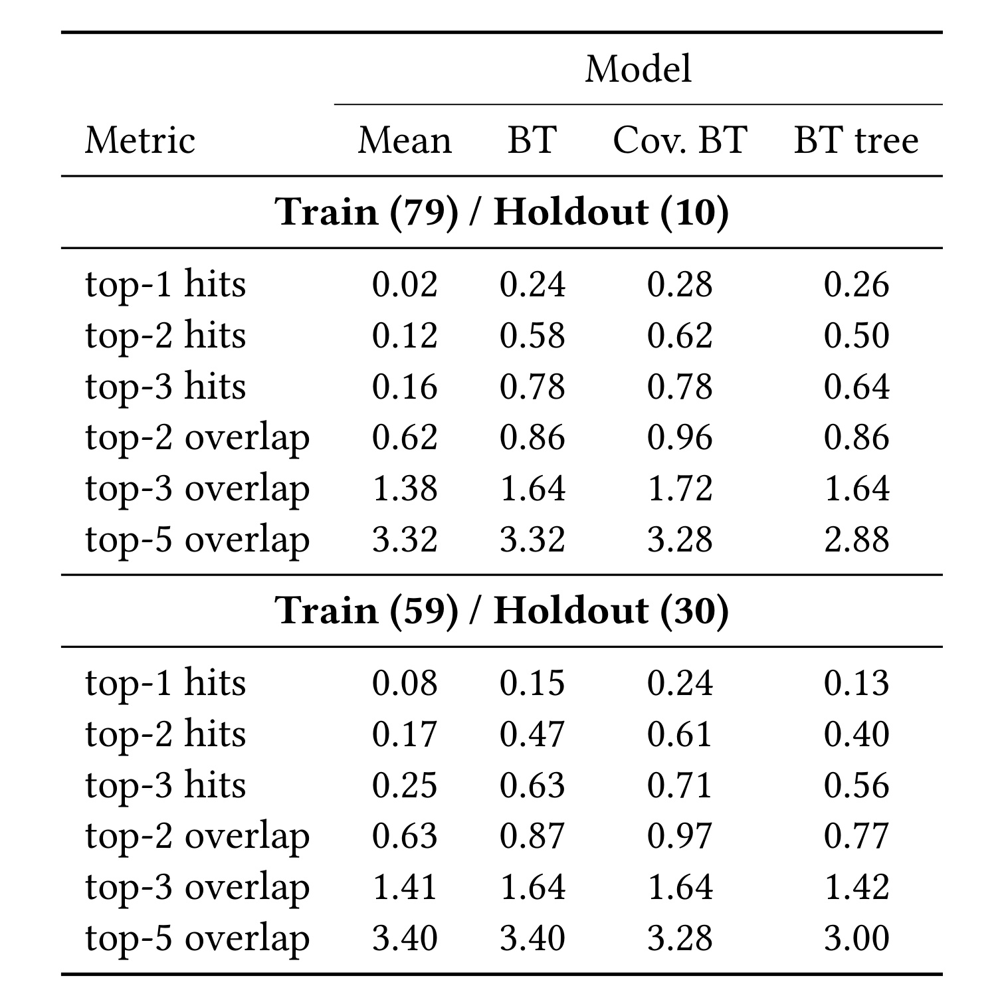
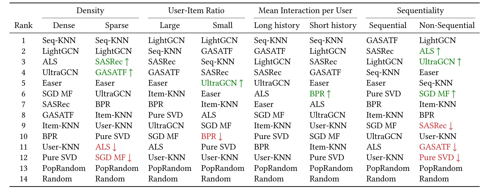

Bradley-Terry Rankings for Recommender Systems Across Dataset Taxonomies
论文：Bradley-Terry Rankings for Recommender Systems Across Dataset Taxonomies。中文可译为“跨数据集 taxonomy 的推荐算法 Bradley-Terry 排名”。作者来自 HSE University 等机构，论文入口为 arXiv:2606.07492，ACM Reference Format 显示为 KDD 2026 论文。PDF 的 Resource Availability 段落声明源码已经通过 Zenodo DOI 和 GitHub 仓库公开；本次 worker 修复只依据 PDF 重新审计和写作，没有独立联网检查仓库活跃状态，因此代码可用性在本文中按“PDF 声明存在，外部状态未复核”处理。
1. 背景和问题
推荐系统论文经常会把多个算法放在同一批公开数据集上比较，然后用 NDCG、Recall、HitRate、Coverage 等指标给出一个平均排序。这个做法看起来直接，但它隐含了一个很强的假设：每个数据集对最终结论的贡献相同，每个算法在不同数据集上的胜负可以用简单均值或简单求和压缩到一个全局分数里。BTRankings 这篇论文反对的正是这个假设。作者观察到推荐数据集之间的差异非常大，同一个模型在长序列、多交互、稀疏、非序列、用户数少、物品数多等场景下可能完全换位；如果只看平均 NDCG 或平均 Recall，工程团队很容易把“某个模型在少数数据集上很强”误读成“这个模型是普遍强 baseline”。
这篇论文的研究对象不是一个新的召回模型或排序网络，而是一套算法比较方法。它先把推荐算法看成 tournament 里的 players，把每个数据集上的指标比较看成一场算法之间的比赛：算法 i 在某个数据集上指标高于算法 j，就记作 i 在这场比赛中胜过 j；如果二者的 metric 加减标准差区间重叠，则按 tie 处理，对双向胜负矩阵各加 0.5。这样，论文关心的核心对象就从“每个算法的平均指标”变成了“算法之间在多少数据集上互相击败”。这个转换很重要，因为 BT 模型天然会考虑胜利对象的强弱：击败经常胜出的算法，比击败长期垫底的算法更能说明相对实力。
作者的 benchmark 范围也决定了这个问题有现实价值。论文使用 14 个推荐算法和 89 个数据集，算法覆盖 Random、PopRandom、User-KNN、Item-KNN、Seq-KNN、SGD MF、BPR、ALS、PureSVD、EASEr、GASATF、LightGCN、UltraGCN、SASRec；数据集来自 Amazon、MovieLens、GoogleLocal、Foursquare、Retailrocket、Yoochoose 等多种来源，并按 density、user-item ratio、mean interaction per user、sequentiality 等统计特征分组。这样一来，算法排名不再是“论文作者自己挑了几个数据集”的局部结论，而更接近一个跨 benchmark 的方法学问题：当数据集 taxonomy 改变时，强 baseline 应该怎样被选择。
传统均值聚合还有一个漏洞：真实 benchmark 结果矩阵经常不完整。某些模型在大规模数据集上训练成本过高，某些序列模型不适合非时间戳数据，某些图模型或矩阵分解实现会在特定数据规模下缺试验。若简单求和，缺失项会让排名对数据缺口非常敏感；若只保留完整子集，又会牺牲数据覆盖面。论文因此提出 transitive triplets 作为排序一致性指标。它问的不是“平均指标高不高”，而是“排序中的三元组关系是否能在每个数据集上形成一致胜负”。当 A 排在 B 前、B 排在 C 前时，如果 A 在数据集中也胜过 C，那么这个三元组是 transitive。缺失越多，朴素平均和求和越容易破坏这种一致性；BT 和 PL 模型则应当更稳定。
这篇论文还有一个更贴近工程的目标：如果拿到一个新数据集，是否可以不运行全部候选算法，就根据数据集统计特征预测哪些 baseline 更值得跑。推荐算法评测的成本不只是训练时间，还包括调参、随机种子、验证集协议、召回候选生成、GPU/CPU 资源和数据预处理。论文在 Section 7 用 covariate-adjusted BT 与 BT trees 把数据集特征接进成对比较模型，尝试根据用户数、交互数、历史长度、是否序列等属性预测未见数据集上的算法排名。这个问题在工程上比“全局第一是谁”更有用，因为实际接入新业务时，团队最需要的是一个低成本 baseline shortlist，而不是一个永远固定的 leaderboard。
需要强调的是，BTRankings 不是在证明某个推荐算法一劳永逸地最强。相反，它证明“最强”本身依赖数据集条件。SASRec 和 GASATF 在 sequential 数据集里很强，但在 non-sequential 数据集里的排序会明显下降；ALS、UltraGCN、LightGCN、Seq-KNN 等传统或图/邻域方法在不同 taxonomy 下会交替占优。对推荐系统工程来说，这比单个模型提升几个点更值得记住：如果离线评测没有记录数据集结构和缺失试验条件，那么模型选择就是不完整的。
本文的读法也应保持边界。下面的笔记基于本地 PDF 原文、图表和表格重新整理，没有复跑 14 个算法，也没有重算 89 个数据集上的指标。因此，论文报告的实验数字按原文解释，复现状态写作“未重新运行”。这不影响方法学阅读，但会影响工程结论的强度：可以把它作为评测治理和 baseline 选择的参考框架，不应把表格数字直接当作线上排序模型选择的最终证据。
2. 方法
2.1 把推荐算法评测改写为跨数据集成对比赛
BTRankings 的第一步是把“算法在每个数据集上的指标值”改写成“算法之间的胜负矩阵”。设一共有 n 个推荐算法，论文并不是直接对每个算法的 NDCG@10 求平均，而是在每个数据集 d 上比较算法 i 和算法 j 的 metric。如果 i 的指标区间高于 j，胜负矩阵 W 中的 W_ij 增加 1；如果二者的 metric_i 加减 std_i 与 metric_j 加减 std_j 区间重叠，作者把它视为 tie，并给 W_ij 与 W_ji 各加 0.5。这个设计把随机种子引入的不确定性至少部分反映到比较里，避免因为极小差异就把两个算法强行排出胜负。
核心的 Bradley-Terry 概率模型写作：
符号解释：i 和 j 是两个被比较的推荐算法，p_i 与 p_j 是它们的正强度参数，i \succ j 表示 i 在成对比较中胜过 j。这个式子说明，算法 i 的胜率不只由自己的强度决定，也由对手强度决定；如果两个算法强度接近，胜率接近 0.5；如果 i 明显强于 j，概率才接近 1。和平均 NDCG 不同，BT 模型把所有胜负放在同一个概率尺度上估计强度，因此“击败强对手”和“击败弱对手”不会被当作等价事件。
在推荐算法 benchmark 中，这个设定的输入不是用户样本，而是跨数据集实验结果。每个数据集相当于一轮比赛场景，算法之间的相对指标构成该场景中的 pairwise comparisons。这样做的好处是，它允许论文把数据集作为比较发生的上下文，而不是把所有上下文先平均掉。若某个算法在 sequential 数据集上大量胜出、在 non-sequential 数据集上大量失败，胜负矩阵会保留这种结构；后续按 taxonomy 切分或加入 covariate 时，模型就能解释为什么 ranking 会变化。
胜负矩阵进入经典 BT 模型后，估计目标可以由 tournament loglikelihood 表示：
符号解释：W_ij 是算法 i 在多少个可比较数据集上击败算法 j；p_i 和 p_j 仍然是算法强度。这个式子把每一次胜利写成对数概率贡献。若 i 击败很多算法，特别是击败本身强度高的算法，优化过程会推高 p_i；若一个算法只在弱对手上胜出，它的强度不会被简单均值夸大。论文也提到 Zermelo 迭代可以用来寻找最大值，并通过归一化约束解决强度尺度不唯一的问题。
这个模块的工程含义很清楚：如果我们要在内部推荐链路里维护 baseline 排名，最好不要只维护一个平均指标表，而应维护“算法 A 在哪些数据集/业务切片/指标口径上胜过算法 B”的矩阵。这样的矩阵不仅能产出全局排名，还能支持进一步的 taxonomy 分析、缺失试验鲁棒性分析和新数据集 baseline 推荐。它也让失败更可定位：当某个算法在 sparse 数据集上胜率下降时，问题会出现在成对比较层，而不是被平均数掩盖。
2.2 BT、Bayesian BT、rank centrality 与 Plackett-Luce 的估计差异
论文并没有只使用一种估计器。Section 3.2 介绍经典 Zermelo 估计、Bayesian Bradley-Terry、rank centrality；Section 3.3 介绍 Plackett-Luce 模型。它们都在解决“如何从胜负或 listwise 排名恢复算法强度/排名”的问题，但输出解释略有不同。经典 BT 给点估计，适合形成清晰排序；Bayesian BT 给强度分布和置信区间，适合看不确定性；rank centrality 从图上的随机游走和 stationary measure 估计强度；PL 则把每个数据集上的完整算法排序视为 listwise comparison。
Bayesian BT 在论文中的观测模型可写成：
符号解释：N_ij 是算法 i 与 j 的总可比较次数，W_ij 是 i 胜过 j 的次数，beta_i 是 p_i 的对数强度。论文还给 beta_i 设置正态先验，并对尺度参数使用 LogNormal 先验。这个写法的关键不是贝叶斯形式本身，而是它可以用 MCMC 样本生成强度和胜率的不确定性区间。对于推荐系统 benchmark，很多算法差异并不稳定，尤其当指标区间重叠或缺失结果较多时，只输出一个点排名会误导读者。Bayesian BT 至少能提示“相邻算法的权重区间是否重叠”。
rank centrality 的直觉则是把算法看成图节点，把成对胜负比例转成 Markov chain 的转移概率，再用 stationary distribution 反推强度。它对图结构和胜负比例的处理方式不同，但同样避免了简单平均指标的弱理论基础。论文在实验中发现，在自己的 benchmark 数据上，三个 BT 估计器收敛到相同权重和排名，原因是胜负矩阵 W 较完整，各模型最大化的目标非常接近。因此作者后续主要采用 Bayesian BT，因为它能提供置信区间。
Plackett-Luce 的角色稍有不同。每个数据集上，算法可以按某个 metric 排成一个完整列表，PL 直接对列表概率建模，而不是拆成所有 pairwise 胜负。论文发现，PL 与 BT 在 all 和 sequential 数据集上高度一致，能识别同一批头部模型，例如 SASRec、GASATF、LightGCN、Seq-KNN 等；但在 long-history 或不确定性更强的数据上，PL 会对一些算法给出不同位置，例如论文提到 Item-KNN、SASRec 等模型会出现更明显的名次移动。这说明 PL 不是“错误替代”，而是在不同比较假设下给出另一种解释。对于工程评测，若我们希望保持和成对胜负解释一致，BT 更方便；若每个数据集上的全量排序可靠且缺失少，PL 也可以作为复核视角。
这一部分的一个细节是 tie handling。作者依据 metric_i 加减 std_i 和 metric_j 加减 std_j 的区间是否重叠判断近似平局，然后向 W_ij 和 W_ji 同时加 0.5。这样做没有引入 Rao-Kupper 这样的显式 tie 参数，而是在不改变标准 BT 求解器的前提下处理相近结果。实验里，tie-aware 与 non-tie-aware 的 BT 排名非常接近，但权重间距会更小、置信区间更容易重叠。这个结论对内部评测也有启发：当线上 A/B 或离线随机种子差异很小的时候，强行把 winner 写成 1、loser 写成 0 会制造虚假的排序确定性。
2.3 用 transitive triplets 衡量不完整 benchmark 下的排序一致性
论文提出 transitive triplets，是因为 Kendall tau 或 Spearman rho 在结果缺失时会遇到麻烦。若某个算法在某个数据集上没有指标，常规 rank correlation 往往要把该算法从两边排名中删除；这样做会使比较对象随数据集变化，排名质量指标不再稳定。作者希望构造一个可以在缺失结果下仍然评价排序一致性的指标。
设某个全局排名给出 i_d1 排在 i_d2 前，i_d2 排在 i_d3 前。如果在数据集 d 上，i_d1 胜过 i_d2，i_d2 胜过 i_d3，且 i_d1 胜过 i_d3，那么这个三元组在数据集 d 上是 transitive。论文把所有数据集上的 distinct triplets 统计起来，用 transitive triplets 的比例衡量排名一致性：
符号解释：T 是跨数据集统计到的 transitive triples 数量，n 是算法数量，D 是数据集数量。若考虑 ties，作者会相应放宽胜负关系，使相近指标不会破坏三元组一致性。这个指标的直觉是：一个好的全局排序不一定在每个数据集上完全正确，但它至少应该让大部分三算法关系保持方向一致。若随着缺失比例上升，TTR 急剧下降，说明排序对缺失矩阵很敏感。
这个指标比单纯看平均 NDCG 更接近“排名是否可靠”。平均指标可以被少数大幅领先的数据集拉动，而 TTR 要求三元组之间的相对关系在多数数据集上成立。对 recommender benchmark 来说，这很有意义：很多场景里我们真正需要的不是“绝对第一”，而是“哪些算法稳定属于强 baseline 组，哪些算法稳定属于弱 baseline 组”。若三元组关系稳定，工程团队可以更放心地把前几名作为候选；若三元组关系混乱，说明不同数据集上的模型强弱交叉太多，必须按 taxonomy 拆开处理。
在缺失数据实验中，作者随机删除算法指标表中的一部分 entries，并在剩余数据上重算排名。Figure 1 显示 mean 与 sum ranking 的 transitive-triplet ratio 会随着 missing-comparison ratio 增加而明显下降，BT 与 PL 的曲线则更平稳。这恰好对应论文的核心主张：BT/PL 不是为了得到更漂亮的单一分数，而是为了在结果矩阵不完整时仍然保持排序结构。推荐系统的离线 benchmark 很少完美完整，因此这个性质比一次全量实验中的微小名次差异更有工程价值。
2.4 把数据集特征接入 covariate-adjusted BT 与 BT trees
简单 BT 的弱点是只能给出一个全局排名，无法直接预测新数据集上的具体 ranking。论文在 Section 7 引入 covariate-adjusted BT：把数据集特征 x 接入成对比较概率，让算法强度随数据集属性变化。一个可读的形式是：
符号解释：x 是数据集统计特征向量，可以包括用户数、物品数、交互数、user-item ratio、density、mean interaction per user、mean interaction per item，以及 sequentiality 这样的类别变量；theta_i 是算法 i 的基础强度，gamma_i 描述算法 i 对数据集特征的敏感性；sigma 是 sigmoid 函数。这个式子把“某算法是否强”从固定结论改成条件结论：在不同 x 下，同一对算法的胜率可以变化。
这个设定和推荐系统实际选型很贴近。序列模型需要足够可靠的时间顺序和历史长度，图模型可能更依赖 user-item 图结构，邻域方法可能在小规模或长历史数据上很强，矩阵分解方法在某些非序列低维结构上依然有竞争力。若把这些差异压缩成一个全局 p_i，工程团队只能知道平均强弱；若引入 x，模型可以回答“给定这个新数据集，它更像 sequential 长历史场景还是 non-sequential 稀疏场景，从而哪些算法更可能是强 baseline”。
BT trees 是同一思想的非参数版本。它不预设线性 covariate effect，而是递归地按数据集特征切分样本，寻找不同 leaf 中相对 ranking 更一致的子群。论文尝试了两种树：一种强制 root split 为 sequentiality，因为已有推荐系统研究常把序列性视为关键属性；另一种不施加 root 约束，让模型自己选择 split。Figure 6 说明，在强制 sequentiality split 的树里，sequential 与 non-sequential 被先分开；后续 non-sequential 分支又按用户数、交互数继续切。无约束树则首先按用户数切，再按交互数和 mean interactions per user 切。这个结果本身就是一个可解释发现：算法排名不仅受“是否序列”影响，也受规模和交互密度影响。
BT trees 的工程优势是解释成本低。对一个新数据集，团队只需要计算统计特征，沿树的 split 条件向下走，就能到达一个 leaf，并使用该 leaf 对应的算法排名作为 baseline shortlist。它不需要先训练所有候选模型，因此论文称这种预测具有 zero computational cost。这个说法不是指构建 benchmark 没成本；前期 89 数据集和 14 算法实验仍然昂贵。它指的是：在 benchmark 已经建好后，新数据集的算法初筛可以复用已有比较结构，而不是重新从头跑所有模型。

Figure 6 应放在方法章而不是实验章，因为它展示的是 BT tree 如何把数据集特征转成条件化算法排名，而不是单纯报告一个结果数字。读这张图时，左侧 sequentiality-first tree 对应一种有先验的解释路径，右侧 unconstrained tree 对应完全由数据统计驱动的切分路径。两棵树共同说明：BTRankings 不只是生成一个全局榜单，还能把榜单拆成可解释的 dataset-aware baseline selection 规则。
更具体地看，树节点上的 split 不是为了给推荐算法贴一个静态标签，而是在回答“当新数据集具有这些统计特征时，历史 benchmark 中哪一组相对胜负关系最可复用”。这也解释了为什么论文同时保留 covariate-adjusted BT 和 BT tree：前者给连续特征一个概率化参数解释，后者给评测平台一个可以人工审计的路由规则。若内部落地，只要每个新数据集进入平台时自动记录 sequentiality、用户规模、交互规模和人均交互，就可以先走树路径得到 baseline shortlist，再决定是否补跑更昂贵的模型。
2.5 用 holdout 数据集评估未运行模型时的强 baseline 预测
论文最后用 holdout 评估这种预测是否有用。实验做法是随机拿出 10 个或 30 个数据集作为 holdout，在剩余训练数据集上拟合 Mean、BT、covariate-adjusted BT、BT tree 等模型，然后对 holdout 数据集预测算法排名，并与真实 metric 排名比较。指标包括 top-1 hits、top-2 hits、top-3 hits、top-2 overlap、top-3 overlap、top-5 overlap；另外 Table 6 还报告 Kendall tau、MAP@5、NDCG@5 和 top-5 overlap 等 ranking accuracy 指标。
这部分方法的价值在于，它把“排名方法是否优雅”转成了“能不能帮我在新数据集上少跑一些模型”。如果 covariate-adjusted BT 或 BT tree 只在已有数据集上解释得很好，但对 holdout 数据集没预测力，它就只是 post-hoc 分析工具。Table 5 显示，在 Train 79 / Holdout 10 时，Mean 的 top-1 hits 只有 0.02，BT 为 0.24，Cov. BT 为 0.28，BT tree 为 0.26；在 Train 59 / Holdout 30 时，Cov. BT 的 top-1 hits 仍为 0.24，高于 BT 的 0.15 和 BT tree 的 0.13。这个结果说明，当训练数据减少时，利用数据集特征的 covariate model 更能帮助预测最优算法。
同时，论文并没有把简单 BT 完全否定。Table 5 和 Table 6 共同显示，若目标是获得 top-5 强 baseline，简单全局 BT 仍然相当有用。例如 Train 79 / Holdout 10 中，Mean、BT、Cov. BT、BT tree 的 top-5 overlap 分别为 3.32、3.32、3.28、2.88；Train 59 / Holdout 30 中，Mean 与 BT 都为 3.40，Cov. BT 为 3.28，BT tree 为 3.00。作者据此认为，若只需要一个足够强的 top-5 baseline set，全局 BT 可以作为可靠选择；若需要更准确的完整 ranking 或 top-1 预测，covariate-adjusted BT 更值得使用。
这个结论对工程使用尤其重要。很多团队并不需要每次新业务都精确预测第一名，而是需要先用有限资源跑 3 到 5 个合理 baseline。此时全局 BT 给出的稳定 top group 可能已经足够；等业务场景非常特殊，或需要节省更多训练预算时，再加入数据集特征进行个性化排序。换句话说，BTRankings 给出的不是单一路线，而是两层策略：全局 BT 用于稳定强 baseline 池，covariate BT/BT tree 用于数据集特异性更强的预测。
如果把这套方法接入实际评测平台，还需要额外维护三类对象。第一类是原始 metric 表及标准差，因为 tie handling 依赖区间重叠，而不是只依赖平均值。第二类是数据集 taxonomy 字段，包括序列性、用户数、物品数、交互密度和人均历史长度；没有这些字段，covariate BT 与 BT tree 只能退化为全局排名。第三类是缺失试验原因，例如超时、显存不足、任务不适配、实现未覆盖或调参预算提前耗尽。只有把这三类对象和胜负矩阵一起保存，BT 排名才会成为可审计的评测资产，而不是又一个静态 leaderboard；否则仍会退回到无法解释业务差异的离线榜单。
3. 实验结果
3.1 排名质量：BT/PL 是否比均值和求和更一致
论文的第一个关键实验证据是 Table 1。作者在 all datasets、long-history datasets、sparse datasets 三个集合上，用 NDCG@10 构造排名，并比较 Mean、Sum、BT、PL 的 ratio of transitive triplets 与 mean Kendall's tau。结果显示，BT 与 PL 在 transitive-triplet ratio 上通常高于 Mean 和 Sum。例如 All 且考虑 ties 时，Mean 与 Sum 都是 0.613，BT 与 PL 都是 0.631；Long history 且考虑 ties 时，Mean 为 0.556，Sum 为 0.569，BT 为 0.588，PL 为 0.576；Sparse 且考虑 ties 时，BT 为 0.624，高于 Mean 的 0.615、Sum 的 0.575 和 PL 的 0.614。Kendall tau 也有类似趋势，All 不考虑 ties 时 BT 为 0.567，高于 Mean 0.542、Sum 0.541 和 PL 0.558。
从 Table 1 可以读出两个层次。第一，BT 的优势不是只出现在全体数据集，也出现在 long-history 和 sparse 这样的子集里，说明它对推荐数据集结构差异有一定稳健性。第二，PL 与 BT 的表现接近，但并不总是更高；在 long-history 的 Kendall tau 中，BT 不考虑 ties 为 0.533，高于 PL 的 0.502。这说明 listwise 排名并不会自动替代 pairwise 模型。对工程评测来说，这张表的意义是把“排行榜是否可信”拆成了可衡量项：一方面看三元组一致性，另一方面看与 per-dataset ranking 的相关性。若某个内部 leaderboard 只报告平均 NDCG，而没有类似一致性检查，就很难判断它是否只是被部分数据集拉高。
3.2 缺失比较：transitive triples 曲线如何支持鲁棒性主张
第二个关键实验是随机制造缺失结果。作者从 metric 表中删除不同比例的 entries，然后重新计算各类排名。Figure 1 的横轴是 missing comparisons ratio，纵轴是 ratio of transitive triples。紫色 Mean 和绿色 Sum 曲线会随着缺失比例增加明显下降，尤其当 missing ratio 到 0.6 到 0.9 时，三元组一致性恶化；蓝色 Bradley-Terry 和橙色 Plackett-Luce 曲线在多数区间保持在更高水平，直到极高缺失比例才快速下降。这说明 BT/PL 使用剩余成对信息时，对不完整矩阵更稳。

这个图要和推荐算法实验成本一起理解。真实 benchmark 中的缺失不是随机噪声那么简单：大数据集上某些算法可能超时，序列模型可能不适合无时间戳数据，图模型可能因显存或图规模无法完成，矩阵分解或邻域模型也可能因实现差异缺 trial。虽然论文实验采用随机删除来控制变量，但它展示了一个基本性质：当信息变少时，简单均值和求和很容易因为缺哪一项而改变全局关系；BT 和 PL 仍然利用剩余 pairwise/listwise 结构维持较高 transitivity。对内部评测平台而言，这意味着缺失结果不能只用空值填补或删除数据集处理，而应该进入排序方法本身。
还要注意，Figure 1 的纵轴不是某个推荐指标的绝对效果，而是排序关系的自洽程度。也就是说，蓝色和橙色曲线更高并不等价于 BT/PL 让算法在用户侧推荐得更好，而是说明它们在已有试验结果上生成的 ranking 更少违反三算法之间的传递关系。这个 distinction 很关键：BTRankings 解决的是“如何比较算法”，不是“如何提升单个模型”。如果内部复现时把这个图误读成模型效果曲线，就会把评测治理结论误用成模型训练结论。
3.3 NDCG@10 taxonomy：算法强弱随数据集条件改变
Table 2 是论文最重要的结果表之一。它按 Density、User-Item Ratio、Mean Interaction per User、Sequentiality 四组 opposing dataset characteristics 展示基于 NDCG@10 的 BT ranking。表中绿色箭头表示名次提升幅度至少 3，红色箭头表示下降幅度至少 3。最醒目的模式是 Sequentiality：Sequential 数据集中 SASRec 排第 1，GASATF 排第 2；但 Non-Sequential 数据集中 LightGCN 排第 1，ALS 升到第 2，SASRec 降到第 10，GASATF 降到第 11，PureSVD 降到第 12。这和推荐系统常识一致：序列模型依赖时间顺序和历史结构，离开序列条件后优势会明显削弱。

这张表还显示其他 taxonomy 也会改变结论。Sparse 数据集里 GASATF 从 Dense 的第 9 升到第 3，User-KNN 从 Dense 的第 12 升到 Sparse 的第 6；Small user-item ratio 下 UltraGCN 和 ALS 都比 Large 场景更靠前；Short history 下 LightGCN 变成第 1，而 GASATF 从 Long history 的第 2 降到第 5，UltraGCN 从第 5 降到第 8。换句话说，论文不是只说“序列与非序列不同”，而是在多个统计维度上展示了推荐算法 ranking 的非稳定性。工程启发是：baseline 选择必须记录数据集 taxonomy，尤其在新业务数据集和公开 benchmark 结构差异很大时，不能直接沿用全局排行榜。
3.4 Pairwise win heatmap：从名次表回到胜率结构
Table 2 给的是排名，但排名本身会隐藏强弱差距。Figure 4 用 pairwise win probability heatmap 展示模型之间的胜率结构，分别对应 all datasets、sequential datasets、non-sequential datasets。红色越深表示行算法胜过列算法的概率越高，蓝色越深表示胜率越低。All heatmap 中，Seq-KNN、LightGCN、SASRec、GASATF、EASEr 构成较强头部区域；Sequential heatmap 中，SASRec 和 GASATF 的上方红色更突出；Non-sequential heatmap 中，LightGCN、ALS、Seq-KNN、EASEr、UltraGCN 变成更强的一组，而 SASRec 和 GASATF 下移。

这张图的价值在于，它把“第 1、第 2、第 3”转换为“行模型击败列模型的概率”。对于模型选择，概率结构比名次更实用。若头部模型之间都是浅红或白色，说明排名不确定，工程上应该把它们都纳入候选；若某个模型对大多数列都是深红，才说明它具有明显优势。Figure 4 也解释了为什么 BT 比简单求和更适合 benchmark 汇总：它不是把每个数据集的一列数字平均，而是在估计算法之间的相互胜率。这样一来，团队可以看到某些模型是否只压过弱 baseline，还是能稳定压过强 baseline。
三个 heatmap 之间的差异也能帮助定位 taxonomy 的影响来源。All 面板给出全局强弱结构，但它混合了 sequential 和 non-sequential；Sequential 面板让 SASRec、GASATF 这类序列模型形成更强头部；Non-sequential 面板则让 LightGCN、ALS、EASEr、UltraGCN 等方法的优势更清楚。若只看表格名次，我们知道模型换位；看 pairwise 概率后，还能判断这种换位是少数相邻名次交换，还是整个模型簇的胜率关系发生改变。后者才是 baseline 策略需要分叉的信号。
3.5 BT trees：用数据集特征解释未见数据集的排序路线
Figure 6 展示两棵 BT trees。左侧树强制根节点按 Sequential split，p 值为 0.01076；若是 sequential，左叶 n=20，若不是 sequential，则继续按 Num. of Users 切分，阈值为 5543，再按 Num. of Interactions 切分，形成 n=27、n=5、n=37 等叶子。右侧树不强制 sequentiality，根节点首先选择 Num. of Users，阈值仍为 5543；用户数大于阈值的分支继续按 Num. of Interactions 和 Mean Inter. p. User 切。这说明树模型认为用户规模、交互规模和人均交互数本身足以解释一部分 ranking 差异。
这张图把 covariate model 的抽象概率变成了可执行规则。对于新数据集，团队可以先判断是否 sequential，再看用户数、交互数、人均交互是否落在对应区间，然后进入某个 leaf，使用该 leaf 的算法 ranking 做 baseline 初筛。需要注意，BT tree 的优势是解释性和零额外训练候选算法成本，不一定意味着它在所有 holdout 指标上最优。它更像一个可读的决策树：告诉你为什么某些数据集应该优先跑序列模型，为什么另一些数据集可以优先跑 LightGCN、ALS、EASEr 或邻域方法。若内部评测平台要落地类似方法，应先确认自己的数据集统计字段稳定、定义一致，并且能覆盖训练树时使用的取值范围。
3.6 Holdout prediction accuracy：预测新数据集强 baseline 的效果
Table 5 是对实际 baseline 选择能力的验证。作者设置 Train 79 / Holdout 10 和 Train 59 / Holdout 30 两种拆分，比较 Mean、BT、Cov. BT、BT tree 四种方法预测 holdout 数据集 ranking 的准确性。Train 79 / Holdout 10 中，top-1 hits 从 Mean 的 0.02 提升到 BT 的 0.24、Cov. BT 的 0.28、BT tree 的 0.26；top-2 hits 从 0.12 提升到 0.58、0.62、0.50；top-3 hits 从 0.16 提升到 0.78、0.78、0.64。Train 59 / Holdout 30 中，Cov. BT 的 top-1 hits 为 0.24，高于 BT 0.15 和 BT tree 0.13，也高于 Mean 0.08。

这张表说明，加入 dataset covariates 对更准确的 top-k prediction 有帮助，尤其当训练数据集减少时更明显。Cov. BT 在两个 holdout 设置的 top-1/top-2/top-3 hits 中整体强于或等于其他方法；BT tree 的 top-1 在 10 holdout 时接近 Cov. BT，但在 30 holdout 时下降较多，可能反映树模型对数据划分更敏感。与此同时，top-5 overlap 并没有让 Cov. BT 绝对领先：Train 79 / Holdout 10 中 Mean 与 BT 都是 3.32，Cov. BT 为 3.28；Train 59 / Holdout 30 中 Mean 与 BT 为 3.40，Cov. BT 为 3.28。这支持作者在讨论中的更细结论：若只需要足够强的 top-5 baseline，全局 BT 已经很有价值；若要预测更靠前的位置，特别是 top-1/top-2，covariate-adjusted BT 更合适。
3.7 Recall@10 taxonomy：NDCG 结论是否换指标后仍成立
Table 9 是附录中的 Recall@10 taxonomy 表，作用是检查 Table 2 的 NDCG@10 结论是否只是一个指标偶然性。整体模式仍然相似：Sequential 数据集中 GASATF 排第 1，SASRec 排第 2，LightGCN 排第 3；Non-Sequential 数据集中 LightGCN 排第 1，ALS 升到第 2，UltraGCN 升到第 3，SASRec 降到第 9，GASATF 降到第 11，Pure SVD 降到第 12。Sparse 数据集中 SASRec 与 GASATF 都提升，Small user-item ratio 中 UltraGCN 提升，Short history 中 BPR 提升。这说明 taxonomy-dependent ranking 不是 NDCG@10 独有现象。

但 Recall@10 也带来细节差异。NDCG@10 的 Table 2 里，Sequential 排名第 1 是 SASRec，第 2 是 GASATF；Recall@10 的 Table 9 则把 GASATF 放到 Sequential 第 1，SASRec 第 2。Non-sequential 下，NDCG@10 中 ALS 第 2、UltraGCN 第 5；Recall@10 中 ALS 仍第 2，但 UltraGCN 升到第 3。这提醒我们，metric choice 会影响算法选择，特别是排序质量与召回覆盖的侧重点不同时。内部评测如果只看一种 metric，可能把某个模型在 ranking precision 上的优势误读成综合优势；更稳的做法是像本文一样同时看 NDCG、Recall、HitRate、Coverage，并检查 taxonomy 下的名次是否一致。
3.8 实验边界和可复现性
论文的实验边界也需要写清。第一，数据量很大但并非无缺失。Table 10 记录了数据集统计和部分算法缺失 trials，这也是作者强调鲁棒排序的原因。第二，论文使用 global temporal split，训练、验证、测试按 90/5/5 划分；对无时间戳数据，作者赋予随机时间戳以适配协议。这个设计统一了评测流程，但也意味着某些非时间戳数据集上的“序列性”需要谨慎解释。第三，作者对指标使用 10 个随机种子平均，并用 Optuna 做超参搜索，预算为 200 trials 和 20 startup trials；这提高了比较公平性，但复跑成本也很高。
因此，BTRankings 的实验结论可以分三层使用。第一层是方法学结论：成对比较和 BT/PL ranking 比简单均值、求和更适合不完整 benchmark，这是最稳定的阅读结论。第二层是推荐算法 taxonomy 结论：序列模型、图模型、邻域模型、矩阵分解模型在不同数据特征下确实会换位，但具体名次依赖论文数据集集合。第三层是工程迁移结论：可以用全局 BT 形成强 baseline 池，用 covariate-adjusted BT/BT tree 预测新数据集的候选优先级；不过上线前必须用内部数据、内部 split、内部资源预算重新验证。
4. 总结
BTRankings 的主要贡献不是提出一个新推荐模型，而是给推荐算法比较提供了更可靠的统计接口。它把跨数据集 benchmark 从平均指标表改成成对胜负矩阵，用 Bradley-Terry 模型估计算法强度，再用 transitive triplets 检查排名在缺失结果下是否一致。随后，作者把 density、user-item ratio、history length、sequentiality 等数据集 taxonomy 接入分析，证明不同数据结构会改变算法排名，并用 covariate-adjusted BT 与 BT trees 尝试预测未见数据集上的强 baseline。对推荐系统工程来说，这类工作适合沉淀到评测平台，而不仅是阅读后记住某个排行榜。
我的判断是，这篇论文最适合用于三个场景。第一，治理离线 leaderboard：当内部有多业务、多数据集、多指标结果时，可以用 BT ranking 避免简单平均掩盖胜负结构。第二，选择新业务 baseline：先用全局 BT 得到稳定 top group，再用数据集统计特征做更细的候选排序。第三，处理缺失实验：对超时、资源不足、任务不适配导致的缺失结果，不要简单填零、删除或只报均值，而应把缺失鲁棒性作为排序质量的一部分。
局限也很明确。第一，论文的 benchmark 范围很大，但仍然是公开数据集和指定协议下的离线结果，不能直接代表线上推荐流量。第二，BT 模型以胜负次数为核心，虽然处理了 ties，但没有直接建模指标差距大小；一个微弱胜利和一个大幅胜利在 W 中的结构仍然相近。第三，covariate-adjusted BT 与 BT trees 依赖数据集特征定义，如果内部数据集的统计字段不稳定或业务 taxonomy 与论文不同，预测会失真。第四，本文没有复跑实验，表格数字只按论文原文解释，不能作为已复现指标。第五，代码状态本次未联网复核，只能说明 PDF 声明了资源可用。
后续跟进建议有三条。第一，若要在内部复现，应先构建算法-数据集-指标的胜负矩阵，而不是直接从平均指标开始；同时保存随机种子标准差，用于 tie handling。第二，用现有业务数据集做一次 taxonomy 切分，至少检查 sequentiality、历史长度、用户数、物品数、交互密度是否会改变 baseline 排名。第三，在新数据集接入时，把全局 BT top-5 与 covariate BT top-5 都作为候选，比较训练预算、top-k overlap 和真实线上指标，再决定是否需要更复杂的树模型或特征化 BT。这样使用，BTRankings 更像一套评测治理工具，而不是一个孤立论文结论。